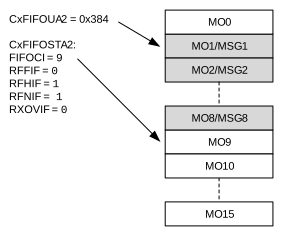
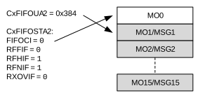
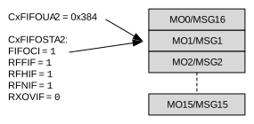
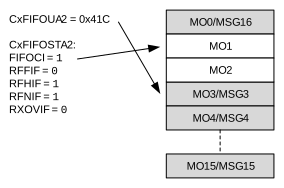

FIFO 2 is configured as an RX FIFO. CxFIFOCON2 is used to control the FIFO. CxFIFOSTA2 contains the status flags and the FIFO index (FIFOCIx). CxFIFOUA2 contains the user address of the next message object to read.
Figure 38-24 through Figure 38-31 illustrate how the status flags, user address and FIFO index are updated.
Figure 38-24 shows the status of FIFO 2 after the Reset. Message objects, MO0 to MO15, are empty. All status flags are cleared. The user address and the FIFO index point to MO0.
Figure 38-25 illustrates the status of FIFO 2 after the first message (MSG0) is received. MO0 now contains MSG0. The FIFO index now points to MO1. RFNIF is set since the FIFO is not empty anymore.
Figure 38-26 illustrates the status of FIFO 2 after MSG0 is read. The user application reads the message from RAM and sets the UINC bit (CxFIFOCON2[8]). The user address increments and points to MO1. The FIFO index is unchanged. The FIFO is empty again. All flags are cleared.
Figure 38-27 illustrates the status of FIFO 2 after eight more messages are received: MSG1-MSG8. The user address still points to MO1. RFNIF and RFHIF are set because the FIFO is now half full. The FIFO index points to MO9.

Figure 38-28 illustrates the status of FIFO 2 after ten more messages are received: MSG5-MSG15. The user address still points to MO1. The FIFO index points to MO0. RFNIF and RFHIF are set.

Figure 38-29 illustrates the status of FIFO 2 after one more message is received: MSG16. All status flags are set because the FIFO is full. The user address and the FIFO index point to MO1.

Figure 38-30 illustrates the status of FIFO 2 after one more message is received. Since FIFO 2 is already full, an overflow occurs. The message is discarded and RXOVIF is set. The user address and FIFO index has not changed.
Figure 38-31 illustrates the status of FIFO 2 after the application cleared RXOVIF and read two more messages. RFFIF is clear because the FIFO is not full anymore. The user address points to MO3. The FIFO index has not changed.
